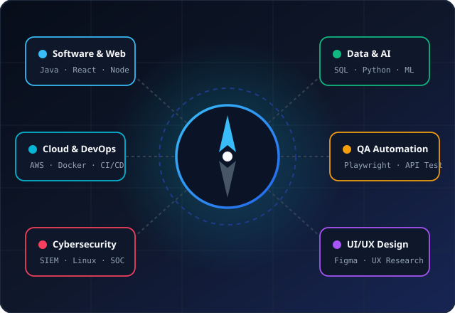

Academic & Industry Alignment
We map university course modules directly to real-world job roles, showing how your current studies translate into industry careers.
PathFinder LK helps university undergraduates navigate the tech world with clarity. Explore diverse IT careers, understand essential industry skills, follow step-by-step learning roadmaps, and access 100% free learning resources.

Bridging the gap between university lecture halls and the practical expectations of the technology sector.
PathFinder LK is an educational career navigation website designed specifically for Sri Lankan university students pursuing degrees in Computing, Information Systems, Software Engineering, and related disciplines.
The technology landscape evolves at lightning speed. While universities provide strong theoretical foundations, students often encounter overwhelming career choices and uncertainty regarding what industry employers actually look for. Without clear direction, undergraduates can spend months learning mismatched tools rather than building high-value competencies.
Our mission is to eliminate confusion by offering transparent, realistic guidance tailored to the Sri Lankan tech ecosystem, helping students prepare early for successful internships and graduate roles.
We map university course modules directly to real-world job roles, showing how your current studies translate into industry careers.
From 1st-year programming logic to 3rd-year internship preparation, our roadmaps outline what to learn at each stage of your degree.
No expensive courses required. We curate reputable free documentation, tutorials, and student benefits like the GitHub Student Pack.
Explore the five highest-demand career areas in today's tech ecosystem. Click any card to review required skills, day-to-day duties, and career growth.
Builds robust, scalable web, mobile, and enterprise applications using modern programming languages and architectural patterns.
View Career Details →Extracts, cleans, and translates complex operational datasets into interactive visual dashboards and strategic business insights.
View Career Details →Architects and manages automated ETL pipelines, cloud data warehouses, and high-volume data streaming infrastructure.
View Career Details →Protects digital networks, servers, and sensitive corporate data by monitoring threats, analyzing logs, and patching vulnerabilities.
View Career Details →Conducts user research, crafts wireframes, designs intuitive UI prototypes, and tests digital experiences for maximum usability.
View Career Details →Follow this five-step process to transition from a student learner to a confident IT job candidate.
Browse in-demand IT specializations and see how different technical fields compare side-by-side.
Browse Careers →Learn about daily responsibilities, required tools, career ladders, and university course alignments.
Read Profiles →Answer 9 targeted questions to receive personalized role recommendations matching your problem-solving style.
Start Quiz →Navigate structured milestones from 1st-year computational logic to 3rd-year industrial internship readiness.
View Milestones →Study with 100% free verified tutorials, official documentation, interactive labs, and student developer packs.
Access Resources →Do not wait until your final year to prepare for the tech industry. Assess your strengths with our 3-minute quiz or explore the comprehensive learning roadmaps today.